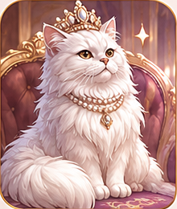

👑 猫さま監督官
QUEEN OF YOUR TASKS · Ver.6
👑 優雅にお待ちです
今日の任務を申しつけるにゃ。
🎀 今日の任務 0
🔔 猫さまの催促通知タスクを追加すると、開いている間に催促するにゃ。締切あり：締切を過ぎたら催促が始まります。締切なし：追加後から催促します。怒りの段階は催促開始から1分・2分・3分で変化します。
Ver.6：ホーム画面対応・オフライン表示対応。自動催促は画面を開いている間だけです。閉じた状態の通知は未実装。タスクはこの端末内に保存されます。